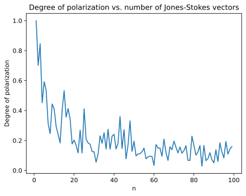
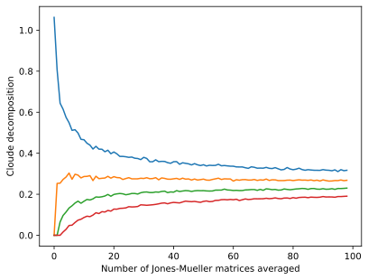

Using the Mueller module¶
In this notebook, we demonstrate how to use the Mueller module, which defines the MuellerMatrix and StokesVector classes and various operations on them.
The first thing, of course, is to import the package and some other packages that we will be using. We will be creating some random matrices and vectors, so we need random, and we will be graphing a few things, so we need maptplotlib.pyplot.
In [1]:
from pySCATMECH.mueller import *
import random
import matplotlib.pyplot as plt
Mueller matrices¶
The class MuellerMatrix is used for handling Mueller matrices. Here we show several ways one can create a unit Mueller matrix. The JonesMueller() function converts a 2 x 2 complex Jones matrix into a Mueller matrix. And MuellerUnit() returns a unit Mueller matrix.
In [2]:
m1 = MuellerMatrix([[1,0,0,0],[0,1,0,0],[0,0,1,0],[0,0,0,1]])
m2 = MuellerMatrix([1,0,0,0],[0,1,0,0],[0,0,1,0],[0,0,0,1])
m3 = MuellerMatrix(1,0,0,0,0,1,0,0,0,0,1,0,0,0,0,1)
m4 = JonesMueller([[1,0],[0,1]])
m5 = MuellerUnit()
print(m5)
[[1. 0. 0. 0.]
[0. 1. 0. 0.]
[0. 0. 1. 0.]
[0. 0. 0. 1.]]
We can check to see that these are valid matrices. The valid method tests whether a Mueller matrix maps the set of valid Stokes vectors onto itself. The physically_valid method tests whether a Mueller matrix is a convex sum of Jones-Mueller matrices. The latter is a more stringent test of whether the matrix is realizable.
In [3]:
print(m1.valid())
print(m1.physically_valid())
True
True
But, a random matrix is not necessarily valid. In fact, it probably isn’t!
In [4]:
# Returns a random number with a normal distribution...
ran = lambda : random.gauss(0,1)
# Create 20 random matrices...
m1 = [MuellerMatrix([[ran(), ran(), ran(), ran()],
[ran(), ran(), ran(), ran()],
[ran(), ran(), ran(), ran()],
[ran(), ran(), ran(), ran()]]) for i in range(20)]
# See if they are valid...
print("Number valid() is True:", sum([m.valid() for m in m1]))
print("Number physically valid() is True:", sum([m.physically_valid() for m in m1]))
Number valid() is True: 2
Number physically valid() is True: 0
A Mueller matrix made from a random Jones matrix, however, always yields a valid Mueller matrix.
In [5]:
# Returns a random complex number with a normal distribution...
ranc = lambda : random.gauss(0,1)+random.gauss(0,1)*1j
# Create 20 random Jones-Mueller matrices...
m1 = [JonesMueller([[ranc(), ranc()], [ranc(), ranc()]]) for i in range(20)]
# See if they are valid...
print("Number value() is True:", sum([m.valid() for m in m1]))
print("Number physically valid() is True:", sum([m.physically_valid() for m in m1]))
Number value() is True: 20
Number physically valid() is True: 20
To make a random depolarizing Mueller matrix, we average some random Jones-Mueller matrices:
In [6]:
def RandomMuellerMatrix(n):
"""
Creates a random Mueller matrix by averaging `n` Jones-Mueller matrices.
"""
ranc = lambda : (random.gauss(0,1)+random.gauss(0,1)*1j)/2
return sum([JonesMueller([[ranc(),ranc()],[ranc(),ranc()]]) for i in range(n)])/n
m = RandomMuellerMatrix(4)
print(m)
print("m is a valid Stokes to Stokes mapper:",m.valid())
print("m is the sum of Jones-Mueller matrices:",m.physically_valid())
[[ 1.28323389 -0.26513625 0.36131103 -0.28698016]
[-0.72764078 -0.01640131 -0.10701278 0.49417 ]
[-0.10501052 0.13393989 -0.07835965 0.16946087]
[-0.4069613 0.35911699 -0.08553465 -0.34998481]]
m is a valid Stokes to Stokes mapper: True
m is the sum of Jones-Mueller matrices: True
Stokes Vectors¶
The class StokesVector is used for handling Stokes vectors. We can create a Stokes vector a several ways. The Polarization function provides a means for generating arbitrary polarizations by name or parameter. (Note that SCATMECH’s convention for the signs of the Stokes vector elements differs from some others.)
In [7]:
print("Unpolarized Stokes vector:", StokesVector((1,0,0,0)) )
print("Unpolarized Stokes vector:", StokesVector(1,0,0,0) )
print("s-polarized unit polarization from a Jones vector:", JonesStokes((1.,0.)) )
print("p-polarized unit Stokes vector:", Polarization('p') )
print("s-polarized unit Stokes vector:", Polarization(state = 's') )
print("Left-handed circularly polarized unit Stokes vector:", Polarization("L") )
print("Right-handed circularly polarized unit Stokes vector with intensity 2:", Polarization("R", I=2) )
print("Unpolarized Stokes vector:", Polarization("U") )
print("Unpolarized Stokes vector:", Polarization('s', DOP=0) )
print("Linear polarization at 45 degrees:", Polarization(angle = 45*deg) )
print("Elliptically polarized radiation:", Polarization(angle = 34*deg, ellipticity = 20*deg) )
print("Partially polarized radiation:", Polarization("S", DOP = 0.8) )
print("Partially polarized elliptical polarized radiation with intensity 3:\n",
Polarization(angle = 34*deg, ellipticity = 20*deg, DOP = 0.7, I = 3) )
Unpolarized Stokes vector: StokesVector(1,0,0,0)
Unpolarized Stokes vector: StokesVector(1,0,0,0)
s-polarized unit polarization from a Jones vector: StokesVector(1.0,1.0,0.0,0.0)
p-polarized unit Stokes vector: StokesVector(1,-1,0,0)
s-polarized unit Stokes vector: StokesVector(1,1,0,0)
Left-handed circularly polarized unit Stokes vector: StokesVector(1,0,0,1)
Right-handed circularly polarized unit Stokes vector with intensity 2: StokesVector(2,0,0,-2)
Unpolarized Stokes vector: StokesVector(1,0,0,0)
Unpolarized Stokes vector: StokesVector(1,0,0,0)
Linear polarization at 45 degrees: StokesVector(1.0,6.123233995736766e-17,1.0,0.0)
Elliptically polarized radiation: StokesVector(1.0,0.2869652992419897,0.7102640395405222,0.6427876096865393)
Partially polarized radiation: StokesVector(1.0,0.8,0.0,0.0)
Partially polarized elliptical polarized radiation with intensity 3:
StokesVector(3.0,0.6026271284081782,1.4915544830350964,1.3498539803417322)
Note that polarization sensitivity can also be expressed as a Stokes vector. However, there is often a factor of two that enters for all but unpolarized sensitivity. That is, a perfect polarizer transmits 50 % of unpolarized radiation. We can apply senstivity = True to the Polarization() function, or use a Sensitivity function.
In [8]:
# Only sensitive to p-polarization
# The following two statements are equivalent...
sens = Polarization('p', sensitivity = True)
sens = Sensitivity('p')
print('Signal for p-polarization:',sens @ Polarization('p'))
print('Signal for s-polarization:',sens @ Polarization('s'))
Signal for p-polarization: 1.0
Signal for s-polarization: 0.0
Sensitivity does not need to be full polarizing. By setting DOP in the range [0,1], sensitivity to the orthogonal polarization can be non-zero.
In [9]:
sens = Sensitivity('p',DOP=.8)
print('sens = ', sens)
print('Signal for p-polarization:',sens @ Polarization('p'))
print('Signal for s-polarization:',sens @ Polarization('s'))
sens = StokesVector(0.6,-0.4,0.0,0.0)
Signal for p-polarization: 1.0
Signal for s-polarization: 0.19999999999999996
In a manner similar to what we did with Mueller matrices, we can create a random Stokes vector by averaging a number of Stokes vectors created from Jones vectors. For a single Jones vector, the Stokes vector is depolarized. For more than one, the Stokes vector is partially polarized or unpolarized. We illustrate that by plotting the degree of polarization (using the DOP() method) as a function of the number of Jones-Stokes vectors we add.
In [10]:
def RandomStokesVector(n):
ranc = lambda : (random.gauss(0,1) + random.gauss(0,1)*1j)/2
return sum([JonesStokes([ranc(),ranc()]) for i in range(n)])/n
plt.figure()
plt.plot(range(1,100),[RandomStokesVector(i).DOP() for i in range(1,100)])
plt.title("Degree of polarization vs. number of Jones-Stokes vectors")
plt.xlabel("n")
plt.ylabel("Degree of polarization")
plt.show()

We can multiply Mueller matrices and Stokes vectors. You can use the @ or * operators or the dot() function to multiply the objects. If a Stokes vector multiplies a Mueller matrix from the left, it is assumed to be transposed first. The product of two Stokes vectors is the inner product, a scalar.
In [11]:
m1 = RandomMuellerMatrix(4)
m2 = RandomMuellerMatrix(4)
s1 = RandomStokesVector(4)
s2 = RandomStokesVector(4)
print("m1 = \n",m1)
print("m2 = \n",m2)
print("s1 = ",s1)
print("s2 = ",s2)
print("m1 * s1 = ",m1 * s1)
print("m1 @ s1 = ",m1 * s1)
print("m1.dot(s1) = ",m1.dot(s1))
print("m1 @ m2 = ",m1 * m2)
print("s1 @ m1 = ",s1 * m1)
print("s1 @ s2 = ",s1 * s2)
m1 =
[[ 1.28145296 0.40015939 -0.4992118 -0.14314473]
[ 0.05749294 -0.24778426 -0.3446974 0.08787843]
[-0.24565227 -0.45028237 0.0932674 0.70494889]
[-0.49834943 -0.2347083 0.34938319 -0.21881784]]
m2 =
[[ 0.96038749 -0.30848946 -0.05546277 -0.18159292]
[ 0.17580533 0.06952891 -0.13647563 -0.15666024]
[-0.0438392 0.19094767 -0.01840033 -0.17607025]
[ 0.13757819 -0.11759067 -0.21381157 -0.15232209]]
s1 = StokesVector(1.0190196924659323,0.17358299413985184,-0.153212887414287,-0.6044752306015782)
s2 = StokesVector(0.6759089887255842,-0.04631392936823076,-0.1074054309153328,0.2609135193116403)
m1 * s1 = StokesVector(1.5382997904552291,0.015267048423181835,-0.7688997705782583,-0.46982929674491997)
m1 @ s1 = StokesVector(1.5382997904552291,0.015267048423181835,-0.7688997705782583,-0.46982929674491997)
m1.dot(s1) = [ 1.53829979 0.01526705 -0.76889977 -0.4698293 ]
m1 @ m2 = [[ 1.30323299 -0.44598293 -0.08589327 -0.1856914 ]
[ 0.03885512 -0.11111699 0.01818092 0.07568276]
[-0.22218658 -0.02061273 -0.07736525 -0.00865084]
[-0.56529277 0.22986138 0.10002882 0.09908099]]
s1 @ m1 = StokesVector(1.654682573779921,0.5756235873331745,-0.7940235123273994,-0.10635039177957724)
s1 @ s2 = 0.5394653957375258
Mueller matrix decompositions¶
So, now that we can create some physically valid Mueller matrices, we can explore some decompositions. The Cloude decomposition* decomposes a Mueller matrix into an incoherent, positive (convex) sum of Jones-Mueller matrices.
*S. R. Cloude, “Group theory and polarization algebra,” Optik (Stuttgart) 75, 26–36 (1986) and S. R. Cloude and E. Pottier, “A review of target decomposition theorems in radar polarimetry,” IEEE Trans. Geosci. and Remote Sensing 34, 498–518 (1996).
In [12]:
M = RandomMuellerMatrix(4)
MCD = M.Cloude_Decomposition()
print("M = \n\n",M,"\n\nCloude decomposition =\n")
for m in MCD:
print(m,"\n")
print(f"Purity1 = {(MCD[0][0,0]-MCD[1][0,0])/M[0,0]}")
print(f"Purity2 = {(MCD[0][0,0]+MCD[1][0,0]-2*MCD[2][0,0])/M[0,0]}")
print(f"Purity3 = {(MCD[0][0,0]+MCD[1][0,0]+MCD[2][0,0]-3*MCD[3][0,0])/M[0,0]}")
M =
[[ 1.02712606 0.24708561 0.18604943 -0.13882923]
[ 0.11783069 -0.13114489 0.00733771 -0.41007545]
[-0.24025617 -0.30528404 -0.44848285 -0.26780404]
[-0.01768136 -0.08545351 0.3241625 0.49145767]]
Cloude decomposition =
[[ 0.6593466 0.21296485 0.24369376 -0.07308104]
[ 0.09097609 -0.21197083 0.29743157 -0.44669441]
[-0.31647037 -0.46167366 -0.45952551 -0.02244221]
[-0.04063707 -0.33456876 0.29054059 0.36049647]]
[[ 0.31692691 0.05339781 -0.04086342 -0.0599766 ]
[ 0.04500486 0.0605896 -0.30040937 0.02080571]
[ 0.07767677 0.15715523 0.00126309 -0.27140126]
[ 0.00769554 0.25847009 0.06121081 0.14774978]]
[[ 0.03834791 -0.01948503 -0.02043505 -0.01413236]
[-0.02173739 0.02761011 0.00608893 0.01211207]
[-0.00652854 -0.00492739 0.00165363 0.02211763]
[ 0.02195097 -0.00816398 -0.02917813 -0.00611662]]
[[ 0.01250464 0.00020798 0.00365415 0.00836077]
[ 0.00358713 -0.00737377 0.00422658 0.00370119]
[ 0.00506597 0.00416177 0.00812594 0.0039218 ]
[-0.00669081 -0.00119087 0.00158923 -0.01067196]]
Purity1 = 0.3333764978293949
Purity2 = 0.8758201248560172
Purity3 = 0.9513023946571003
Notice that if we create the random Mueller matrix from less than four Jones-Mueller matrices, the Cloude decomposition will have only as many non-zero matrices as there were Jones-Mueller matrices. In the following, we plot the average magnitude of each element of the Cloude decomposition as a function of how many Jones-Mueller matrices were added.
In [13]:
jmax = 100
imax = 100
mCD00sums = []
for i in range(1,imax):
mCD00sum = np.array([0,0,0,0])
for j in range(jmax):
M = RandomMuellerMatrix(i)
mCD = Cloude_Decomposition(M)
mCD00sum = mCD00sum + np.array([m[0,0] for m in mCD])
mCD00sums.append(mCD00sum/jmax)
plt.figure()
plt.plot(mCD00sums)
plt.xlabel("Number of Jones-Mueller matrices averaged")
plt.ylabel("Cloude decomposition")
plt.show()

The Lu-Chipman decomposition* decomposes a given Mueller matrix \(\mathbf{M}\) into the ordered product of three matrices:
where \(\mathbf{M}_\Delta\) is a depolarizer, \(\mathbf{M}_R\) is a retarder, and \(\mathbf{M}_D\) is a diattenuator. Notice that if there is only one Jones-Mueller matrix used to create the random matrix, there will be no depolarization.
*S.-Y. Lu and R. A. Chipman, “Interpretation of Mueller matrices based on polar decomposition,” J. Opt. Soc. Am. A 13, 1106–1113 (1996)
In [14]:
def printMatrix(name,M):
print("\n",name,"=\n")
print(M)
M = RandomMuellerMatrix(4)
depol, ret, diatten = Lu_Chipman_Decomposition(M)
printMatrix("M",M)
printMatrix("Depolarizer",depol)
printMatrix("Retarder",ret)
printMatrix("Diattenuator",diatten)
printMatrix("The product Depolarizer . Retarder . Diattenuator",depol @ ret @ diatten)
M =
[[ 0.88954684 0.23888139 0.16943653 0.02040468]
[ 0.07104176 -0.0251821 -0.07050726 0.03410431]
[-0.05471386 0.00584935 -0.01888548 0.2424316 ]
[ 0.31609872 -0.27383741 0.23642338 -0.09410258]]
Depolarizer =
[[ 1. 0. 0. 0. ]
[ 0.11411239 0.12151473 0.02632313 0.00212206]
[-0.07348516 0.02632313 0.28365022 -0.06254756]
[ 0.43746819 0.00212206 -0.06254756 0.49389818]]
Retarder =
[[ 1.00000000e+00 -2.23074597e-17 -7.76017705e-17 0.00000000e+00]
[ 1.80411242e-16 -4.43233125e-01 -8.90443784e-01 1.03219501e-01]
[ 2.77555756e-17 -6.39502098e-02 1.46264922e-01 9.87176247e-01]
[-1.11022302e-16 -8.94122345e-01 4.30948304e-01 -1.21773525e-01]]
Diattenuator =
[[0.88954684 0.23888139 0.16943653 0.02040468]
[0.23888139 0.87270425 0.02340621 0.00281873]
[0.16943653 0.02340621 0.85630664 0.0019993 ]
[0.02040468 0.00281873 0.0019993 0.83994559]]
The product Depolarizer . Retarder . Diattenuator =
[[ 0.88954684 0.23888139 0.16943653 0.02040468]
[ 0.07104176 -0.0251821 -0.07050726 0.03410431]
[-0.05471386 0.00584935 -0.01888548 0.2424316 ]
[ 0.31609872 -0.27383741 0.23642338 -0.09410258]]
The reverse Lu-Chipman decomposition is similar to the Lu-Chipman decomposition, except that the order of the elements us reversed. That is,
where \(\mathbf{M}^\prime_D\) is a diattenuator, \(\mathbf{M}^\prime_R\) is a retarder, and \(\mathbf{M}^\prime_\Delta\) is a depolarizer. Note that highly depolarizing Mueller matrices often cannot be decomposed in this fashion, an exception will be thrown if this is the case.
In [15]:
M = RandomMuellerMatrix(2)
diatten, ret, depol = Reverse_Lu_Chipman_Decomposition(M)
printMatrix("M",M)
printMatrix("Diattenuator",diatten)
printMatrix("Retarder",ret)
printMatrix("Depolarizer",depol)
printMatrix("The product Diattenuator . Retarder . Depolarizer", diatten @ ret @ depol)
M =
[[ 1.15123767 0.3107208 -0.57876437 -0.64228501]
[ 0.35535777 0.28835753 0.18200003 -0.42906417]
[-0.58624544 0.1265506 0.47964119 0.5311281 ]
[ 0.67839879 0.39424397 -0.65209766 -0.31396265]]
Diattenuator =
[[ 1.62591528 0.67840419 -0.80182587 1.04263937]
[ 0.67840419 0.87347861 -0.2365849 0.30763878]
[-0.80182587 -0.2365849 0.95293688 -0.36360732]
[ 1.04263937 0.30763878 -0.36360732 1.14612025]]
Retarder =
[[ 1. 0. 0. 0. ]
[ 0. 0.48543149 0.57491682 -0.65865539]
[ 0. 0.50980515 0.42589059 0.74747302]
[ 0. 0.71024994 -0.69863285 -0.08635485]]
Depolarizer =
[[ 1. 0. 0. 0. ]
[-0.25119832 0.58690123 0.05365634 0.03589699]
[ 0.02999515 0.05365634 0.88123486 0.01328619]
[ 0.25366908 0.03589699 0.01328619 0.57822047]]
The product Diattenuator . Retarder . Depolarizer =
[[ 1.15123767 0.3107208 -0.57876437 -0.64228501]
[ 0.35535777 0.28835753 0.18200003 -0.42906417]
[-0.58624544 0.1265506 0.47964119 0.5311281 ]
[ 0.67839879 0.39424397 -0.65209766 -0.31396265]]
The symmetric decomposition, introduced by Ossikovski,* is a decomposition that treats the ordering of the Mueller matrix product as symmetric. That is, the Mueller matrix \(\mathbf{M}\) is decomposed into
where \(\mathbf{M}_{D_1}\) and \(\mathbf{M}_{D_2}\) are a diattenuators, \(\mathbf{M}^\prime_{R_1}\) and \(\mathbf{M}^\prime_{R_2}\) are retarders, and \(\mathbf{M}_\Delta\) is a diagonal depolarizer.
*R. Ossikovski, “Analysis of depolarizing Mueller matrices through a symmetric decomposition,” J. Opt. Soc. Am. A, 26(5), 1109-1118 (2009).
In [16]:
M = RandomMuellerMatrix(2)
diatten2, ret2, depol, ret1, diatten1 = Symmetric_Decomposition(M)
printMatrix("M",M)
printMatrix("diatten2",diatten2)
printMatrix("ret2",ret2)
printMatrix("depol",depol)
printMatrix("ret1",ret1)
printMatrix("diatten1",diatten1)
printMatrix("The product Diattenuator2 . Retarder2 . Depolarizer . Retarder1 . Diattenuator1",
diatten2 @ ret2 @ depol @ ret1 @ diatten1)
M =
[[ 1.55151702 0.03609571 0.79076626 0.99870727]
[-0.45333709 -0.1206727 0.04826892 -0.39460121]
[ 0.37397408 -0.32658845 0.2094163 0.42084963]
[ 1.34688134 0.09494389 0.84251601 0.91920683]]
diatten2 =
[[ 1. -0.41806846 0.15200294 0.80658326]
[-0.41806846 0.51508519 -0.04574149 -0.24272107]
[ 0.15200294 -0.04574149 0.4059088 0.08824946]
[ 0.80658326 -0.24272107 0.08824946 0.85756188]]
ret2 =
[[ 1. 0. 0. 0. ]
[ 0. -0.33430761 -0.29479283 0.89517351]
[ 0. -0.76521911 0.63935971 -0.07522554]
[ 0. -0.55016192 -0.71015234 -0.43932393]]
depol =
[[1.44369712 0. 0. 0. ]
[0. 1.44369712 0. 0. ]
[0. 0. 0.99000645 0. ]
[0. 0. 0. 0.99000645]]
ret1 =
[[ 1. 0. 0. 0. ]
[ 0. 0.39884236 -0.54904816 -0.73448682]
[ 0. -0.79377392 -0.60776703 0.02328524]
[ 0. -0.45918159 0.57372934 -0.67822335]]
diatten1 =
[[ 1. -0.1887404 0.45505762 0.12958454]
[-0.1887404 0.87967413 -0.04616312 -0.01314565]
[ 0.45505762 -0.04616312 0.97182783 0.03169447]
[ 0.12958454 -0.01314565 0.03169447 0.86955292]]
The product Diattenuator2 . Retarder2 . Depolarizer . Retarder1 . Diattenuator1 =
[[ 1.55151702 0.03609571 0.79076626 0.99870727]
[-0.45333709 -0.1206727 0.04826892 -0.39460121]
[ 0.37397408 -0.32658845 0.2094163 0.42084963]
[ 1.34688134 0.09494389 0.84251601 0.91920683]]
The differential decomposition is simply the matrix logarithm of the Mueller matrix.
In [17]:
M = RandomMuellerMatrix(4)
L = MuellerLog(M)
printMatrix("M",M)
printMatrix("L",L)
printMatrix("MuellerExp(L)",MuellerExp(L))
M =
[[ 1.42807254 0.19183427 -0.19322453 0.1932571 ]
[-0.55595764 -0.26641233 0.54768937 -0.26053033]
[ 0.54269769 0.34867879 -0.19276603 0.26581507]
[-0.1217463 0.19896928 -0.07335943 -0.31574191]]
L =
[[ 0.37971771 0.08513869 -0.12618294 0.4902034 ]
[-1.10520971 -1.74282749 0.97318479 -3.03750829]
[ 0.88603772 -0.01086403 -2.00943351 2.01419761]
[ 1.07487994 1.62658763 -2.24127411 0.6971408 ]]
MuellerExp(L) =
[[ 1.42807254 0.19183427 -0.19322453 0.1932571 ]
[-0.55595764 -0.26641233 0.54768937 -0.26053033]
[ 0.54269769 0.34867879 -0.19276603 0.26581507]
[-0.1217463 0.19896928 -0.07335943 -0.31574191]]
Other parameters¶
One can obtain other parameters associated with a Mueller matrix.
In [18]:
M = RandomMuellerMatrix(4)
print("Tmax = ",M.Tmax())
print("Tmin = ",M.Tmin())
print("diattenuation = ",M.diattenuation())
print("linear diattenuation = ",M.linear_diattenuation())
print("polarization dependent loss = ",M.polarization_dependent_loss())
print("polarizance = ",M.polarizance())
print("depolarization index = ",M.depolarization_index())
print("extinction_ratio = ",M.extinction_ratio())
Tmax = 1.8534996529463224
Tmin = 0.907896368081053
diattenuation = 0.3424366797318185
linear diattenuation = 0.23506164760130002
polarization dependent loss = 3.099562302828938
polarizance = 0.4764573850052099
depolarization index = 0.5618222211547547
extinction_ratio = 2.041532181546132
There is also a class CharacterizedMueller that performs a Lu-Chipman decomposition and extracts parameters from them. This is treated as a separate class, because initialization performs the decomposition, assigning values to the parameters. Note that the parameters differ from those shown above, due to differences in definition.
Ghosh, M.F.G. Wood, and I.A. Vitkin, ‘’Mueller matrix decomposition for extraction of individual polarization parameters from complex turbid media exhibiting multiple scattering, optical activity, and linear birefringence,’’ J. Biomedical Opt. 13, 044036 (2008).
In [19]:
parametersM = CharacterizedMueller(M)
print(parametersM)
Mdepol =
[[ 1. 0. 0. 0. ]
[ 0.08919002 0.65147165 0.18793015 0.12235724]
[ 0.15367016 0.18793015 0.27412491 0.07061781]
[-0.42568498 0.12235724 0.07061781 0.16796685]]
Mret =
[[ 1.00000000e+00 3.64291930e-17 -7.80625564e-18 0.00000000e+00]
[ 0.00000000e+00 -9.59824678e-01 2.67785067e-01 8.38316440e-02]
[ 1.11022302e-16 1.66217040e-01 3.01895801e-01 9.38738952e-01]
[ 4.44089210e-16 2.26071852e-01 9.14959061e-01 -3.34277482e-01]]
Mdiatten =
[[ 1.38069801 0.30891112 -0.09952924 -0.34381571]
[ 0.30891112 1.33285666 -0.01148118 -0.03966081]
[-0.09952924 -0.01148118 1.30092143 0.01277847]
[-0.34381571 -0.03966081 0.01277847 1.34136445]]
DiattenuationVector = [ 0.22373547 -0.07208618 -0.24901587]
Diattenuation = 0.3424366797318185
CircularDiattenuation = -0.24901586586543895
LinearDiattenuation = 0.23506164760130002
DiattenuationAngle = -0.1558458439490496 rad (-8.92930911293498 deg)
PolarizanceVector = [ 0.08919002 0.15367016 -0.42568498]
Polarizance = 0.4612776611868638
DepolarizationCoefficient = 0.36452113612237175
LinearRetardance = 1.9116348343603011 rad (109.52860797903546 deg)
OpticalRotation = 0.07658314337500824 rad (4.387890897233243 deg)
Retardance = 3.0532823583229534 rad (174.94019279365594deg)
RetardanceAngle = 0.6642819505002977 rad (38.06055217038532 deg)